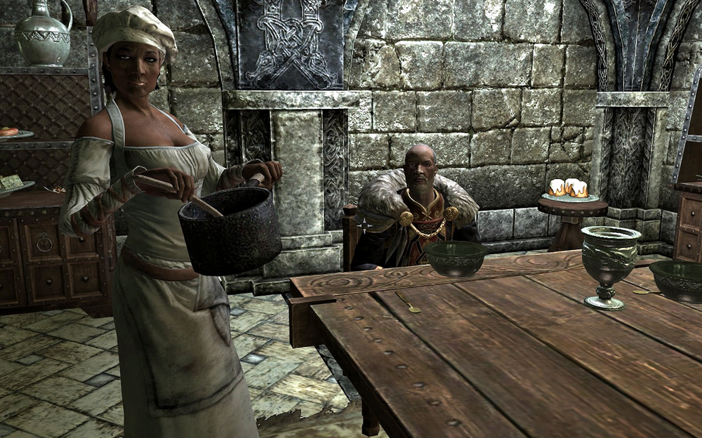

Potage le Magnfique

This is an iconic dish to die for (at least in Skyrim), this french style soup will relieve your soul
Ingredients
- 100 of butter
- 1 large leek, chopped
- 2 red onions, chopped
- 5 cloves of garlic, minced
- ¼ cup of white wine
- 1 large potato, peeled and cubbed
- 3 carrots, peeled and cubbed
- 1 cup of water
- 2 cups of chicken broth
- 2 cups of beef broth
- ½ cup of plain flour
- 1 tbsp mixed dried herbs
- 1 bay leaf
- salt & pepper
Steps
- Melt the butter in a pan and fry the leaks until softened
- Add the onions and garlic and fry until browned
- Add the wine and cook 2 minutes
- Add the potatoes, carrots, water, and broth
- Sift in the flour while stirring
- Add the herbs, salt and peper, and simmer for 30 mins
- Remove the bayleaf and blend the soup until smooth